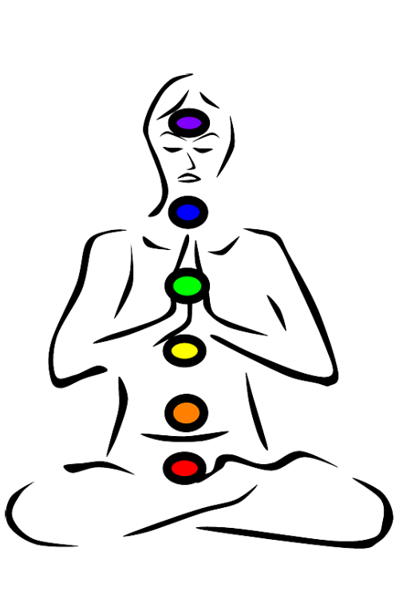
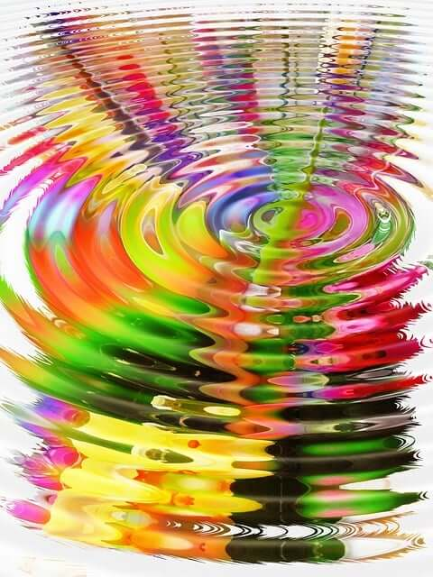
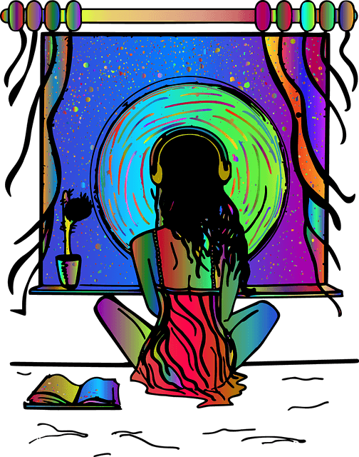
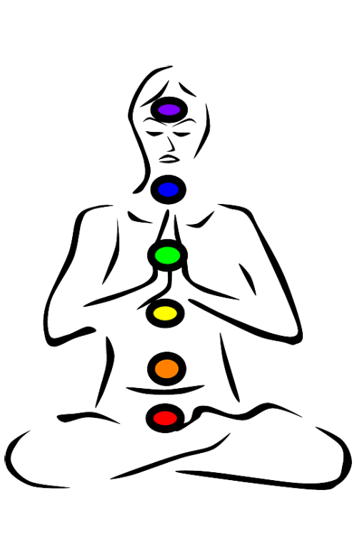
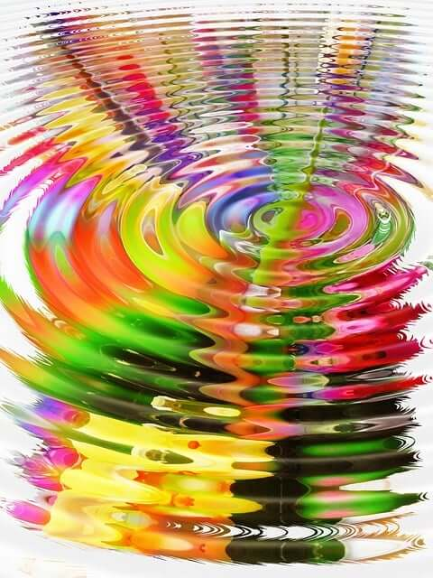
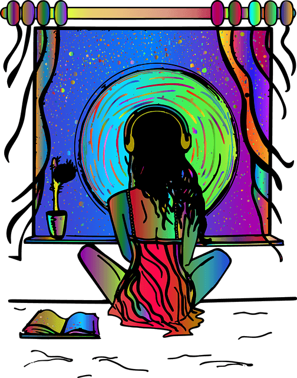

Binaural Beats
Verändere dich selbst und deine Wirklichkeit mit diesen Frequenzen
Change yourself and your reality with these frequencies
Cámbiate a ti mismo y a tu realidad con estas frecuencias
Changez vous-même et votre réalité avec ces fréquences
Cambia te stesso e la tua realtà con queste frequenze
Promijenite sebe i svoju stvarnost pomoću ovih frekvencija
Andere Generatoren:
Other generators:
Otros generadores:
Autres générateurs :
Altri generatori:
Ostali generatori:
 Solfeggio+
Solfeggio+
 Secret of Five
 Chakra Boost
 Single frequency
 Programs
Secret of Five
 Chakra Boost
 Single frequency
 Programs
Bitte mit Kopfhörern nutzen!
Please use with headphones!
¡Úselo con auriculares!
Veuillez utiliser avec des écouteurs !
Si prega di utilizzare con le cuffie!
Molimo koristite sa slušalicama!
Diese Frequenzen funktionieren NUR über die Ohren.
Der Effekt wird durch die Differenz des linken und des rechten Ohres erzeugt.
Verwenden Sie gute Kopfhörer um den größtmöglichen Effekt zu erzeugen.
Wenn Sie Frequenzen suchen, die Sie über beliebige Lautsprecher abspielen können, oder
raumfüllende Klänge große Effekte bringen, wechseln Sie hier
zu den Solfeggio-Frequenzen.
These frequencies ONLY work through the ears.
The effect is created by the difference between the left and right ear.
Use good headphones to create the greatest possible effect.
If you are looking for frequencies that you can play through any speaker, or
Room-filling sounds bring great effects, switch here
on the Solfeggio frequencies.
Estas frecuencias SOLO funcionan a través de los oídos.
El efecto se crea por la diferencia entre el oído izquierdo y el derecho.
Utilice buenos auriculares para crear el mayor efecto posible.
Si está buscando frecuencias que pueda reproducir a través de cualquier altavoz, o
Los sonidos que llenan la habitación traen grandes efectos, cambie aquí
sobre las frecuencias de Solfeggio.
Ces fréquences fonctionnent UNIQUEMENT à travers les oreilles.
L'effet est créé par la différence entre l'oreille gauche et l'oreille droite.
Utilisez de bons écouteurs pour créer le plus grand effet possible.
Si vous recherchez des fréquences que vous pouvez lire sur n'importe quel haut-parleur, ou
Les sons qui remplissent la pièce apportent de superbes effets, changez ici
sur les fréquences du solfège.
Queste frequenze funzionano SOLO attraverso le orecchie.
L'effetto è creato dalla differenza tra l'orecchio sinistro e destro.
Usa buone cuffie per creare il massimo effetto possibile.
Se stai cercando frequenze che puoi riprodurre attraverso qualsiasi altoparlante, o
I suoni che riempiono la stanza portano grandi effetti, cambia qui
sulle frequenze del Solfeggio.
Ove frekvencije djeluju SAMO kroz uši.
Efekt se stvara razlikom između lijevog i desnog uha.
Koristite dobre slušalice za postizanje najvećeg mogućeg učinka.
Ako tražite frekvencije koje možete puštati preko bilo kojeg zvučnika, ili
Zvukovi koji ispunjavaju sobu donose sjajne efekte, prebacite se ovdje
na frekvencijama Solfeggia.
Sitzungslänge
Session length
Duración de la sesión
Durée de la session
Durata della sessione
Duljina sesije
10 Min.
Lautstärke
Volume
Volumen
Volume
Volume
Volumen
50%
3 Hz Delta Spezial - Schumann + Delta 3
3 Hz Delta Special - Schumann + Delta 3
3 Hz Delta Special - Schumann + Delta 3
3 Hz Delta Special - Schumann + Delta 3
3 Hz Delta Special - Schumann + Delta 3
3 Hz Delta Special - Schumann + Delta 3
3.5 Hz Theta-Bereich - beschleunigte Speicherung der Sprache
3.5 Hz Theta range - accelerated storage of speech
3.5 Hz Rango theta: almacenamiento acelerado del habla
3.5 Hz Gamme Thêta - stockage accéléré de la parole
3.5 Hz Gamma Theta: memorizzazione accelerata della parola
3.5 Hz Theta raspon - ubrzano pohranjivanje govora
5.5 Hz Visionen über notwendige Wachstumsprozesse
5.5 Hz Visions of necessary growth processes
5.5 Hz Visiones de procesos de crecimiento necesarios
5.5 Hz Visions des processus de croissance nécessaires
5.5 Hz Visioni di processi di crescita necessari
5.5 Hz Vizije potrebnih procesa rasta
6.3 Hz Beschleunigtes Lernen, verbesserte Gedächtnisleistung, mentale und astrale Projektionen
6.3 Hz Accelerated learning, improved memory, mental and astral projections
6.3 Hz Aprendizaje acelerado, memoria mejorada, proyecciones mentales y astrales.
6.3 Hz Apprentissage accéléré, mémoire améliorée, projections mentales et astrales
6.3 Hz Apprendimento accelerato, memoria migliorata, proiezioni mentali e astrali
6.3 Hz Ubrzano učenje, poboljšano pamćenje, mentalne i astralne projekcije
7 Hz Beschleunigtes Lernen, verbesserte Gedächtnisleistung
7 Hz Accelerated learning, improved memory performance
7 Hz Aprendizaje acelerado, mejor rendimiento de la memoria
7 Hz Apprentissage accéléré, amélioration des performances de la mémoire
7 Hz Apprendimento accelerato, prestazioni di memoria migliorate
7 Hz Ubrzano učenje, poboljšana izvedba pamćenja
7.5 Hz Geführte Meditationen, Kreativität in Kunst/Erfindungen/Musik, Kontakt zu geistigen Bewusstseinsformen
7.5 Hz Guided meditations, creativity in art/inventions/music, exposure to spiritual forms of consciousness
7.5 Hz Meditaciones guiadas, creatividad en arte/invenciones/música, exposición a formas espirituales de conciencia
7.5 Hz Méditations guidées, créativité dans l'art/inventions/musique, exposition à des formes spirituelles de conscience
7.5 Hz Meditazioni guidate, creatività nell'arte/invenzioni/musica, esposizione a forme spirituali di coscienza
7.5 Hz Vođene meditacije, kreativnost u umjetnosti/izumima/glazbi, izlaganje duhovnim oblicima svijesti
7.83 Hz Elementare Schumann Resonanz
7.83 Hz Elementary Schumann Resonance
7.83 Hz Resonancia elemental de Schumann
7.83 Hz Résonance Schumann élémentaire
7.83 Hz Risonanza di Schumann elementare
7.83 Hz Elementarna Schumannova rezonancija
8 Hz Alpha-Bereich - Regression in frühere Lebensphasen
8 Hz Alpha range - regression to earlier stages of life
8 Hz Rango alfa: regresión a etapas anteriores de la vida
8 Hz Gamme alpha - régression aux stades antérieurs de la vie
8 Hz Gamma alfa - regressione alle prime fasi della vita
8 Hz Alfa raspon - regresija u ranije faze života
8.3 Hz Visualisierung mentaler Objekte
8.3 Hz Visualization of mental objects
8.3 Hz Visualización de objetos mentales.
8.3 Hz Visualisation des objets mentaux
8.3 Hz Visualizzazione di oggetti mentali
8.3 Hz Vizualizacija mentalnih objekata
9 Hz Gewahrsein über die Ursachen körperlicher Unausgeglichenheiten
9 Hz Awareness of the causes of physical imbalances
9 Hz Conciencia de las causas de los desequilibrios físicos.
9 Hz Conscience des causes des déséquilibres physiques
9 Hz Consapevolezza delle cause degli squilibri fisici
9 Hz Svijest o uzrocima tjelesne neravnoteže
10.5 Hz Selbstheilung des Körpers
10.5 Hz self-healing of the body
10.5 Hz autocuración del cuerpo
10.5 Hz auto-guérison du corps
10.5 Hz autoguarigione del corpo
10.5 Hz samoizlječenje tijela
12 Hz Zentrierung
12 Hz centering
12 Hz centrado
12 Hz centrage
12 Hz centraggio
12 Hz centriranje
33 Hz Gamma-Bereich - Vibrationsgefühl, physische Aufgewühltheit
33 Hz Gamma range - feeling of vibration, physical agitation
33 Hz Rango gamma - sensación de vibración, agitación física
33 Hz Gamme Gamma - sensation de vibration, agitation physique
33 Hz Gamma gamma - sensazione di vibrazione, agitazione fisica
33 Hz Gama raspon - osjećaj vibracije, fizička uznemirenost
35 Hz Balance der Chakren
35 Hz Balance of the chakras
35 Hz Equilibrio de los chakras
35 Hz Équilibre des chakras
35 Hz Equilibrio dei chakra
35 Hz Ravnoteža čakri
55 Hz Tantrischer Yoga, Stimulation der Kundalini-Kraft
55 Hz Tantric Yoga, Stimulating the Kundalini Power
55 Hz Yoga Tántrico, Estimulando el Poder Kundalini
55 Hz Yoga Tantrique, Stimulation du Pouvoir Kundalini
55 Hz Tantra Yoga, Stimolare il Potere Kundalini
55 Hz Tantrička joga, stimulacija Kundalini moći
62 Hz Gefühl physischer Kraft
62 Hz feeling of physical power
62 Hz sensación de poder físico
62 Hz sensation de puissance physique
62 Hz sensazione di forza fisica
62 Hz osjećaj fizičke moći
63 Hz Astrale Projektionen
63 Hz Astral Projections
63 Hz Proyecciones Astrales
63 Hz Projections astrales
63 Hz Proiezioni Astrali
63 Hz Astralne projekcije
70 Hz Mentale und astrale Projektionen
70 Hz Mental and astral projections
70 Hz Proyecciones mentales y astrales
70 Hz Projections mentales et astrales
70 Hz Proiezioni mentali e astrali
70 Hz Mentalne i astralne projekcije
80 Hz Bindung von Raum und Zeit, Orientierung
80 Hz Binding of space and time, orientation
80 Hz Unión de espacio y tiempo, orientación.
80 Hz Liaison de l'espace et du temps, orientation
80 Hz Legame di spazio e tempo, orientamento
80 Hz Vezivanje prostora i vremena, orijentacija
83 Hz Öffnung des 3.Auges
83 Hz Opening of the 3rd eye
83 Hz Apertura del tercer ojo
83 Hz Ouverture du 3ème oeil
83 Hz Apertura del 3° occhio
83 Hz Otvaranje 3. oka
90 Hz Wohlgefühl, Sicherheit, Ausgeglichenheit
90 Hz Well-being, security, balance
90 Hz Bienestar, seguridad, equilibrio
90 Hz Bien-être, sécurité, équilibre
90 Hz Benessere, sicurezza, equilibrio
90 Hz Dobrobit, sigurnost, ravnoteža
105 Hz Überblick über komplexe Situationen
105 Hz Overview of complex situations
105 Hz Resumen de situaciones complejas
105 Hz Aperçu des situations complexes
105 Hz Panoramica di situazioni complesse
105 Hz Pregled složenih situacija
108 Hz Totales Wissen
108 Hz total knowledge
108 Hz conocimiento total
108 Hz connaissance totale
108 Hz conoscenza totale
108 Hz ukupno znanje
196 Hz Gefühl grosser Beruhigung
196 Hz Feeling of great calm
196 Hz Sensación de gran calma
196 Hz Sensation de grand calme
196 Hz Sensazione di grande calma
196 Hz Osjećaj velike smirenosti
247 Hz Gefühl des Friedens
247 Hz sense of peace
247 Hz sensación de paz
247 Hz sentiment de paix
247 Hz senso di pace
247 Hz osjećaj mira
333 Hz Inspiration bis Ekstase
333 Hz Inspiration to ecstasy
333 Hz Inspiración al éxtasis
333 Hz Inspiration à l'extase
333 Hz Ispirazione per l'estasi
333 Hz Inspiracija do ekstaze
348 Hz Gefühl der Liebe
348 Hz feeling of love
348 Hz sentimiento de amor
348 Hz sentiment d'amour
348 Hz sentimento d'amore
348 Hz osjećaj ljubavi
440 Hz Verständnis
440 Hz Understanding
440 Hz Comprensión
440 Hz Compréhension
440 Hz Comprensione
440 Hz Razumijevanje
494 Hz Geistiges Erwachen
494 Hz spiritual awakening
494 Hz despertar espiritual
494 Hz Eveil spirituel
494 Hz risveglio spirituale
494 Hz duhovno buđenje
698 Hz Starkes Liebesgefühl
698 Hz Strong feeling of love
698 Hz fuerte sentimiento de amor
698 Hz Fort sentiment d'amour
698 Hz Forte sentimento d'amore
698 Hz Snažan osjećaj ljubavi
794 Hz Starker Wille
794 Hz Strong will
794 Hz Voluntad fuerte
794 Hz Forte volonté
794 Hz Forte volontà
794 Hz Snažna volja
880 Hz Unbegrenzte Vorstellungskraft
880 Hz Unlimited imagination
880 Hz Imaginación ilimitada
880 Hz Imagination illimitée
880 Hz Immaginazione illimitata
880 Hz Neograničena mašta
988 Hz Vergeistigung
988 Hz spiritualization
988 Hz espiritualización
988 Hz spiritualisation
988 Hz spiritualizzazione
988 Hz produhovljenje
1925 Hz Gefühl der Erleuchtung, auch Euphorie
1925 Hz Feeling of enlightenment, also euphoria
1925 Hz Sensación de iluminación, también euforia.
1925 Hz Sensation d'illumination, aussi d'euphorie
1925 Hz Sensazione di illuminazione, anche euforia
1925 Hz Osjećaj prosvjetljenja, također i euforije
WARNUNG
WARNING
ADVERTENCIA
AVERTISSEMENT
AVVERTIMENTO
UPOZORENJE
Die Verwendung von solchen Frequenzmustern KANN Ihren Gleichgewichtssinn stören und Übelkeit hervorrufen!
The use of such frequency patterns CAN affect your Disturb your sense of balance and cause nausea!
El uso de tales patrones de frecuencia PUEDE afectar su ¡Perturbe su sentido del equilibrio y provoque náuseas!
DL'utilisation de tels modèles de fréquences PEUT affecter votre Perturbez votre sens de l'équilibre et provoquez des nausées !
L'uso di tali schemi di frequenza PUÒ influenzare il tuo Disturba il tuo senso dell'equilibrio e provoca nausea!
Korištenje takvih frekvencijskih obrazaca MOŽE utjecati na vaše Poremetiti osjećaj ravnoteže i izazvati mučninu!
Hören Sie diese Frequenzen niemals während Sie ein Fahrzeug steuern oder Ihre Aufmerksamkeit in anderer Weise gefordert ist! Sollten Sie unangenehme oder unerwünschte Effekte wahrnehmen, beenden Sie die Anwendung SOFORT! Sollten diese Effekte länger ahalten, kontaktieren Sie einen Arzt. Wir übernehmen keine Haftung/Verantwortung für jede Art von Schädigung.
Never listen to these frequencies while operating a vehicle or your attention is required in some other way! If you notice any unpleasant or unwanted effects, stop using it IMMEDIATELY! If these effects persist, contact a doctor. We assume no liability/responsibility for any kind of damage.
Nunca escuche estas frecuencias mientras conduce un vehículo. ¡o se requiere su atención de alguna otra manera! Si nota algún efecto desagradable o no deseado, deje de usarlo. ¡INMEDIATAMENTE! Si estos efectos persisten, póngase en contacto con un médico. No asumimos ninguna obligación/responsabilidad por ningún tipo de daño.
N'écoutez jamais ces fréquences lorsque vous conduisez un véhicule ou votre attention est requise d'une autre manière ! Si vous remarquez des effets désagréables ou indésirables, arrêtez de l'utiliser IMMÉDIATEMENT! Si ces effets persistent, contactez un médecin. Nous n'assumons aucune responsabilité pour tout type de dommage.
Non ascoltare mai queste frequenze durante la guida di un veicolo o la tua attenzione è richiesta in qualche altro modo! Se noti effetti spiacevoli o indesiderati, smetti di usarlo SUBITO! Se questi effetti persistono, contattare un medico. Non ci assumiamo alcuna responsabilità/responsabilità per qualsiasi tipo di danno.
Nikada ne slušajte ove frekvencije dok upravljate vozilom ili je vaša pozornost potrebna na neki drugi način! Ako primijetite bilo kakve neugodne ili neželjene učinke, prestanite ga koristiti ODMAH! Ako ovi učinci potraju, obratite se liječniku. Ne preuzimamo nikakvu odgovornost/odgovornost za bilo kakvu štetu.
Änderungsvorschläge und Kontaktaufnahme
Wir sind gespannt auf Ihr Feedback!
Zu einfachen Kontaktaufnahme senden Sie eine Email an kontakt@truthupclose.com
Wie funktioniert es?
How does it work?
¿Como funciona?
Comment ça marche?
Come funziona?
Kako radi?
Elektro-magnetische Frequenzen umgeben uns in jeder Sekunde unseres Tages. Sie haben in verschiedenster Weise Einfluss auf unsere Befindlichkeit und Stimmungen. Am einfachsten wird das verständlich, wenn wir an Musik denken. Verschiedene Musikstile und Genres unterstützen unsere aktuelle Stimmung oder verändern unsere Stimmung in gewisser Weise. Ein trauriger, langsamer Song kann uns schnell in eine schwere Stimmung bringen, so wie ein beschwingtes Trompetensolo unsere Innenwelt zum Hüpfen bringen kann.
Electro-magnetic frequencies surround us every second of our day. you have in influence our moods and moods in various ways. That will be the easiest understandable when we think of music. Various music styles and genres support our current mood or change our mood in some way. A sad, slow song can quickly get us in a heavy mood, like a lively trumpet solo can make our inner world jump.
Las frecuencias electromagnéticas nos rodean cada segundo de nuestro día. tienes en influir en nuestros estados de ánimo y estados de ánimo de diversas maneras. eso sera lo mas facil comprensible cuando pensamos en la música. Varios estilos y géneros musicales apoyan nuestra estado de ánimo actual o cambiar nuestro estado de ánimo de alguna manera. Una canción triste y lenta puede ponernos de mal humor rápidamente, como un un solo de trompeta animado puede hacer que nuestro mundo interior salte.
Les fréquences électromagnétiques nous entourent à chaque seconde de notre journée. tu as dans influencer nos humeurs et nos humeurs de diverses manières. Ce sera le plus simple compréhensible quand on pense à la musique. Divers styles et genres musicaux soutiennent notre l'humeur actuelle ou changer notre humeur d'une manière ou d'une autre. Une chanson triste et lente peut rapidement nous mettre d'humeur lourde, comme un un solo de trompette animé peut faire bondir notre monde intérieur.
Le frequenze elettromagnetiche ci circondano ogni secondo della nostra giornata. hai dentro influenzare i nostri stati d'animo e stati d'animo in vari modi. Sarà il più facile comprensibile quando pensiamo alla musica. Vari stili e generi musicali supportano il nostro stato d'animo attuale o cambiare il nostro stato d'animo in qualche modo. Una canzone triste e lenta può metterci rapidamente di cattivo umore, come a un vivace assolo di tromba può far saltare il nostro mondo interiore.
Elektromagnetske frekvencije okružuju nas svake sekunde našeg dana. imate u na razne načine utječu na naša raspoloženja i raspoloženja. Tako će biti najlakše razumljivo kada razmišljamo o glazbi. Razni glazbeni stilovi i žanrovi podržavaju naše trenutno raspoloženje ili na neki način promijeniti naše raspoloženje. Tužna, spora pjesma može nas brzo dovesti u teško raspoloženje, poput živahni solo na trubi može potaknuti naš unutarnji svijet.
Die Differenz zwischen zwei Frequenzen erzeugt intensive und interessante Effekte. Dieser
Generator erzeugt eine Grundschwingung von 432Hz für ein Ohr. Eine zweite Frequenz wird erzeugt,
die auf das andere Ohr ausgepielt wird.
Dadurch entsteht im Gehirn des Hörers eine Kopplung, in der gewünschten Frequenz, was den
gewünschten Effekt erzeugt.
Jeder wird selbst seine Erfahrungen damit machen müssen - darum probieren Sie es aus!
The difference between two frequencies creates intense and interesting effects. This
Generator generates a fundamental frequency of 432Hz for one ear. A second frequency is generated
played to the other ear.
This creates a coupling in the listener's brain, in the desired frequency, what the
desired effect.
Everyone will have to make their own experiences with it - so try it out!
La diferencia entre dos frecuencias crea efectos intensos e interesantes. Este
El generador genera una frecuencia fundamental de 432 Hz para un oído. Se genera una segunda frecuencia.
jugado al otro oído.
Esto crea un acoplamiento en el cerebro del oyente, en la frecuencia deseada, lo que el
efecto deseado.
Todos tendrán que hacer sus propias experiencias con él, ¡así que pruébalo!
La différence entre deux fréquences crée des effets intenses et intéressants. Ce
Le générateur génère une fréquence fondamentale de 432 Hz pour une oreille. Une deuxième fréquence est générée
joué à l'autre oreille.
Cela crée un couplage dans le cerveau de l'auditeur, dans la fréquence souhaitée, ce que
effet désiré.
Chacun devra en faire sa propre expérience - alors essayez-le !
La differenza tra due frequenze crea effetti intensi e interessanti. Questo
Il generatore genera una frequenza fondamentale di 432Hz per un orecchio. Viene generata una seconda frequenza
suonato all'altro orecchio.
Questo crea un accoppiamento nel cervello dell'ascoltatore, nella frequenza desiderata, cosa
effetto desiderato.
Ognuno dovrà fare le proprie esperienze con esso, quindi provalo!
Razlika između dviju frekvencija stvara intenzivne i zanimljive efekte. Ovaj
Generator generira osnovnu frekvenciju od 432Hz za jedno uho. Generira se druga frekvencija
svirao na drugo uho.
Ovo stvara spoj u mozgu slušatelja, u željenoj frekvenciji, što do
željeni učinak.
Svatko će morati steći vlastito iskustvo s njim - stoga ga isprobajte!

Starten
Start
Comenzar
Commencer
Inizio
Početak
Starten Sie eine Frequenz durch Klick auf eine der Bilder-Kacheln. Vorher
können Sie über die Regler am Anfang der Seite die Sitzungsdauer (automatische Abschaltung) und
die Lautstärke einstellen. Eine Sitzung ist auf 10 Minuten vor-eingestellt. Das erleichtert
Neulingen den Einstieg ohne zu überfordern. Fortgeschrittene können die Sitzung auf bis zu 100
Minuten verlängern. Längere Anwendung kann die Effekte durchaus verstärken, aber auch zu
Überforderung führen.
Bitte handeln Sie verantwortungsvoll und umsichtig!
Start a frequency by clicking on one of the image tiles. Beforehand
you can use the controls at the top of the page to set the session duration (automatic shutdown) and
adjust the volume. A session is preset to 10 minutes. That makes it easier
newcomers to get started without being overwhelmed. Advanced users can extend the session up to 100
extend minutes. Longer use can definitely increase the effects, but also too
lead to being overwhelmed.
Please act responsibly and prudently!
Inicie una frecuencia haciendo clic en uno de los mosaicos de imágenes. Antemano
puede usar los controles en la parte superior de la página para establecer la duración de la sesión (apagado automático) y
ajusta el volumen. Una sesión está preestablecida en 10 minutos. Eso lo hace más fácil
recién llegados a empezar sin sentirse abrumados. Los usuarios avanzados pueden extender la sesión hasta 100
ampliar minutos. El uso prolongado definitivamente puede aumentar los efectos, pero también
llevar a sentirse abrumado.
¡Actúe con responsabilidad y prudencia!
Démarrez une fréquence en cliquant sur l'une des tuiles d'image. Préalablement
vous pouvez utiliser les commandes en haut de la page pour définir la durée de la session (arrêt automatique) et
régler le volume. Une session est prédéfinie sur 10 minutes. Cela rend plus facile
nouveaux arrivants pour démarrer sans être submergés. Les utilisateurs avancés peuvent prolonger la session jusqu'à 100
prolonger les minutes. Une utilisation plus longue peut certainement augmenter les effets, mais aussi trop
conduire à être submergé.
Veuillez agir de manière responsable et prudente !
Avvia una frequenza facendo clic su uno dei riquadri immagine. In anticipo
puoi utilizzare i controlli nella parte superiore della pagina per impostare la durata della sessione (spegnimento automatico) e
regolare il volume. Una sessione è preimpostata a 10 minuti. Questo lo rende più facile
nuovi arrivati per iniziare senza essere sopraffatti. Gli utenti avanzati possono estendere la sessione fino a 100
prolungare i minuti. Un uso più lungo può sicuramente aumentare gli effetti, ma anche troppo
portare ad essere sopraffatti.
Si prega di agire in modo responsabile e prudente!
Započnite učestalost klikom na jednu od pločica slike. Unaprijed
možete koristiti kontrole na vrhu stranice za postavljanje trajanja sesije (automatsko isključivanje) i
podesite glasnoću. Sesija je unaprijed postavljena na 10 minuta. To olakšava
pridošlicama da započnu bez preopterećenosti. Napredni korisnici mogu produžiti sesiju do 100
produžiti minute. Dulja uporaba svakako može povećati učinke, ali i previše
dovesti do preopterećenosti.
Molimo vas da se ponašate odgovorno i razborito!
Kopfhörer oder Lautsprecher
Headphones or speakers
Auriculares o altavoces
écouteurs ou haut-parleurs
Cuffie o altoparlanti
Slušalice ili zvučnike
Verwenden Sie geeignete, gut funktionierende Kopfhörer oder Lautsprecher mit festem Stand. Ein knirschendes oder flirrendes Nebengeräusch kann die Erfahrung massiv verschlechtern. Verwenden Sie - wenn möglich - Lautsprecher oder Kopfhörer mit großen "Treibern". In der Regel können diese die Frequenzen deutlicher abbilden ohne Frequenzteile zu unterschlagen und damit den Effekt zu mindern.
Use suitable, well-functioning headphones or speakers with a firm footing. A crunching or shimmering background noise can massively impact the experience deteriorate. If possible, use large speakers or headphones "drivers". As a rule, these can show the frequencies more clearly without frequency parts suppressed and thus reduce the effect.
Use auriculares o parlantes adecuados y que funcionen bien con una base firme Un ruido de fondo crujiente o brillante puede impactar enormemente la experiencia deteriorarse. Si es posible, utilice altavoces o auriculares grandes "conductores". Por regla general, estos pueden mostrar las frecuencias más claramente sin partes de frecuencia suprimir y así reducir el efecto.
Utilisez des écouteurs ou des haut-parleurs adaptés et en bon état de fonctionnement Un bruit de fond craquant ou scintillant peut avoir un impact considérable sur l'expérience détériorer. Si possible, utilisez de grands haut-parleurs ou des écouteurs "Conducteurs". En règle générale, ceux-ci peuvent montrer les fréquences plus clairement sans parties de fréquence supprimé et ainsi réduire l'effet.
Utilizzare cuffie o altoparlanti adatti e ben funzionanti con una base solida Un rumore di sottofondo scricchiolante o luccicante può avere un impatto enorme sull'esperienza deteriorare. Se possibile, utilizzare altoparlanti o cuffie di grandi dimensioni "autisti". Di norma, questi possono mostrare le frequenze in modo più chiaro senza parti di frequenza soppresso e quindi ridurre l'effetto.
Koristite odgovarajuće slušalice ili zvučnike koji dobro funkcioniraju s čvrstim osloncem. Škripanje ili svjetlucanje pozadinske buke može znatno utjecati na iskustvo pogoršati. Ako je moguće, koristite velike zvučnike ili slušalice "vozači". U pravilu, oni mogu jasnije prikazati frekvencije bez frekvencijskih dijelova potisnuti i time smanjiti učinak.
Anwendung
Application
Solicitud
Application
Applicazione
Primjena
Hören Sie diese Frequenzen ausschließlich über Kopfhörer. Ansonsten werden keine Effekte spürbar sein.
Only listen to these frequencies through headphones. Otherwise will no effects can be felt.
Solo escuche estas frecuencias a través de auriculares. De lo contrario no se pueden sentir efectos.
N'écoutez ces fréquences qu'avec des écouteurs. Sinon va aucun effet ne peut être ressenti.
Ascolta queste frequenze solo attraverso le cuffie. Altrimenti lo farà non si possono sentire effetti.
Ove frekvencije slušajte samo preko slušalica. Inače će ne mogu se osjetiti nikakvi učinci.